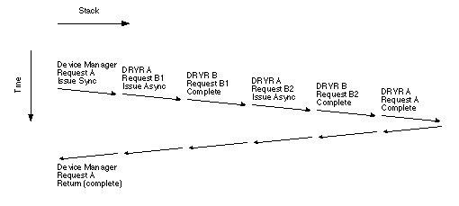
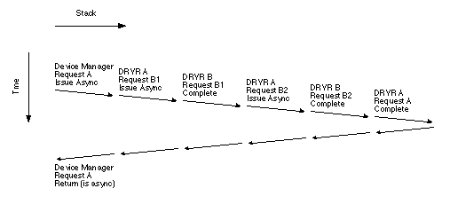
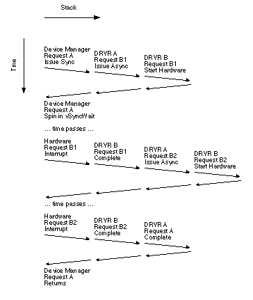
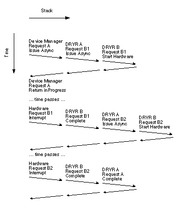

Legacy Document
Important: This document is part of the Legacy section of the ADC Reference Library. This information should not be used for new development.
Current information on this Reference Library topic can be found here:
ADC Home > Reference Library > Technical Notes > Legacy Documents > Hardware & Drivers >
Important: This document is part of the Legacy section of the ADC Reference Library. This information should not be used for new development.
Current information on this Reference Library topic can be found here:
|
Two Rules That Govern Device DriversThere are two important rules about writing traditional Macintosh device drivers. Rule #1If your device driver can be called asynchronously and you call another device driver, you must call it asynchronously. If you don't follow Rule #1, you run the risk of deadlocking the system, with catastrophic results for the user.
Rule #2If your device driver can be called asynchronously, always operate as if you are being called asynchronously. In other words, you should not test to see whether this operation is synchronous or asynchronous, and do different things in each case. If you don't follow Rule #2, the system might trick you into doing illegal things at interrupt time, such as breaking Rule #1. Proof by ExampleThis section describes two examples of how breaking the rules will cause the system to deadlock. Both examples rely on the following scenario: You have written a block device driver that fetches disk blocks over the network using the "classic" AppleTalk device drivers. When you use the Finder to copy files to the disk image, the system will sometimes deadlock in a routine called vSyncWait. This is much more common when running Open Transport than when running classic networking. I chose this example because recently I've helped a number of Macintosh developers who are writing such drivers. These people broke the rules and everything seemed to work fine. Unfortunately, Open Transport significantly changed the way AppleTalk is implemented, and the authors suddenly discovered the penalty of breaking the rules: unpredictable system deadlocks.
When the Finder copies a file, it makes a sequence of chained The next two sections show how your block device driver can deadlock the system by not following these rules. An Example of Breaking Rule #1Imagine that your device driver breaks Rule #1, i.e., it calls another device driver synchronously. The following is a step-by-step description of how this leads to system deadlock:
The basic problem here is that traditional Mac OS device drivers are single threaded, i.e., they can only handle a single request at a time. If you make a second request and the driver is busy and you don't give the driver the ability to complete the request, you deadlock. An Example of Breaking Rule #2Imagine that your device driver breaks Rule #2, i.e., it tests whether it's being called synchronously or asynchronously, and behaves differently in each case. The following is a step-by-step description of how this leads to system deadlock:
The basic problem here is that the ioTrap word in a Avoiding DeadlockThe only good way to avoid the problems described in the previous section is to issue any device driver calls you make inside your device driver asynchronously. A traditional Mac OS device driver (DRVR A) that calls another driver (DRVR B) should operate in the following fashion:
The sub-request should have an
Structuring your device driver in this fashion turns your device driver into a state machine. If, for example, you have to issue two sub-requests for each request you receive, your device driver ends up with two states: Request B1, and Request B2. Your completion routine would go:
This structure works regardless of whether your driver (DRVR A) is called synchronously or asynchronously, and regardless of whether the driver you are calling (DRVR B) is synchronous or asynchronous. Figures 1, 2, 3 and 4 illustrate these four cases.   
 You might think to simplify your life by detecting whether you are being called synchronously or asynchronously, and changing your operation in each case. While it sounds like a neat idea in theory, it is a very bad idea in practice, for two reasons:
Exceptions That Prove the RuleThe expression "The Exception Proves the Rule" actually means that the exception tests the rule. For Rules #1 and #2, there are two significant exceptions that we must explore in order to understand this topic fully. Drivers That Aren't Called Asynchronously: Exception #1Many people use traditional Mac OS device drivers for things that don't fit the model. The obvious example here are desk accessories, but older programs often use device drivers as a shared library mechanism. Drivers used in this way are not really part of the I/O system, and generally aren't called asynchronously. This is the reason for the "If you can be called asynchronously" clause in the rules. Note that using device drivers as a shared library mechanism is now strongly discouraged. The Macintosh has a number of real shared library mechanisms that should meet your needs.
Classic SCSI Manager: Exception #2One case that seems to contradict Rule #1 is the relationship between the File Manager and "classic" SCSI device drivers. The "classic" epithet refers to SCSI device drivers that were written prior to SCSI Manager 4.3. These drivers were necessarily synchronous because the SCSI Manager did not support asynchronous operations. So how is it possible to call the File Manager, which in turn calls the device driver, which calls the SCSI Manager, at interrupt time, even though the SCSI Manager is necessarily synchronous? The answer is simple: the File Manager contains specific code to support this. When you issue an asynchronous request, the File Manager checks whether the SCSI hardware is already in use. If it is, the File Manager defers the operation of the command until the SCSI hardware is free again. This gets around the potential deadlock, but it contradicts the spirit of Rule #1. Note that the File Manager is only able to defer the request because the request is asynchronous. If you called to File Manager synchronously, you would deadlock. SummaryMost Macintosh programmers want to play by the rules. Unfortunately, in the case of traditional Mac OS device drivers, the rules are poorly documented and sometimes hard to understand. This Technote explains two important rules for traditional Mac OS device drivers. If you follow them, you will make the system as a whole more reliable. Referencesdevelop 13, Asynchronous Routines on the Macintosh, by Jim Luther Modern Operating Systems, by Andrew S. Tanenbaum, Prentice-Hall, 1992, ISBN 0-13-588187-0 Downloadables
|
|